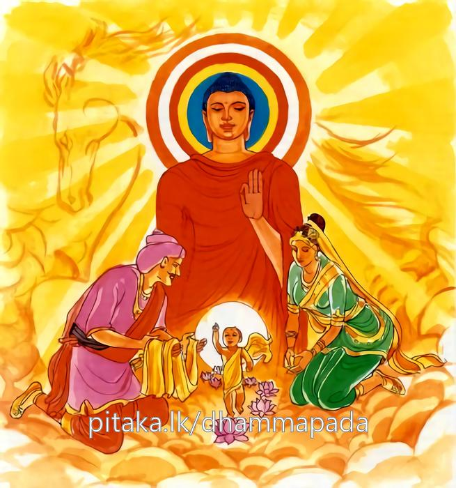

14-7 ආනන්ද මහාස්ථවිරයන් වහන්සේගේ ප්රශ්නය
මෙම කතාව ධම්මපද අටුවාවෙන් ද කියවන්න.
දුල්ලභො පුරිසාජඤ්ඤො න සො සබ්බත්ථ ජායති
යත්ථ සො ජායති ධීරො තං කුලං සුඛමෙධති.
පුරුෂාජානේය (හෙවත් උත්තම පුරුෂ) තෙම දුර්ලභ ය. හෙ තෙම හැම තැන්හි ම උපදෙන් නො වෙයි. ඒ ප්රාඥ තෙම යම් කුලයෙක උපදනේ ද, ඒ කුලය සුවයට පැමිණෙන්නේ ය. (සැපතින් වැඩෙන්නේ ය.)

බුද්ධෝපස්ථායක වූ ආනන්ද මහාස්ථවිරයන් වහන්සේ එක් දවසක් දිවාස්ථානයෙහි හුන්නාහු “බුදුරජානන් වහන්සේ හස්ත්යාජානීයයෝ ඡද්දන්ත කුලයෙහි හෝ උපෝසථ කුලයෙහි උපදිති, අශ්වාජානීයයෝ සින්ධව කුලයෙහි හෝ වලාහකස්සරාජ කුලයෙහි උපදිති, ආජානීය වෘෂහයෝ දක්ෂිණා පථයෙහි උපදිති, යි හස්තයාජානීය්යාදීන් උපදින තැන් වදාරණ සේක, එහෙයින් පුරුෂාජානීයයෝ කොහි උපදින්නෝ දැ? යි දත යුතු ය” යි බුදුරජුන් වෙත එළැඹ වැඳ “ස්වාමීනි! පුරුෂාජානීයයෝ කොහි උපදින්නෝ දැ?” යි විචාළාහු ය. “ආනන්ද! පුරුෂාජානීයයෝ සෙස්සවුන් මෙන් හැම තැන උපදින්නෝ නො වෙති, දිගින් හා පළලින් යොදුන් තුන් සියයක් හා යොදුන් දෙසිය පණසක් පමණ වූ අවටින් යොදුන් නව සියයක් පමණැති මද්ධ්යදේශයෙහි උපදිත්,. උපදින්නෝ ද එසේ මෙසේ කුලයෙක නො උපදිත්, රජමහසල් කුලයෙහි හෝ බමුණු මහසල් කුලයෙහි හෝ යන එක්තරා උසස් කුලයෙක උපදනාහු ය” වදාරා මේ ධර්ම දේශනාව කළ සේක.
දුල්ලභො පුරිසාජඤ්ඤො න සො සබ්බත්ථ ජායති,
යත්ථ සො ජායතී ධීරො තං කුලං සුඛමෙධතී ති.
පුරුෂාජානෙය තෙමේ දුර්ලභ ය. ඒ පුරුෂාජානෙය තෙමේ හැම තැන නො උපදී. ප්රාඥ වූ හෙතෙමේ යම් කුලයක උපදී නම් ඒ කුලය සැපයෙන් වැඩෙන්නේ ය.
දුල්ලභො පුරිසාජඤ්ඤො = පුරුෂාජානෙය තෙමේ දුර්ලභ ය. ලැබිය නො හැකි ය. ලැබීම අපහසු ය.
මෙහි පුරිස ශබ්දය හා එක්ව සිටි ආජඤ්ඤ යනු කර්තෘ අර්ත්ථයෙහි සිද්ධ කෘදන්ත ශබ්දයෙකි. “ආභුසොකාරණාකාරණං ජානාතීති = ආජඤ්ඤං” යනු නිරුක්ති යි. හැමතින් ගැඹුරට ම බැස කරුණු නො කරුණු දන්නේ ආජඤ්ඤ නම් යනු එහි අරුති. පිරිමි බව ලත් හැම කෙනකු කෙරෙහි ම වෙනසක් නො තබා සාමාන්ය විසින් නැගෙන පුරිස ශබ්දය ආජඤ්ඤ ශබ්දය හා එකාර්ත්ථවත් භාවයට ගියේ විශෙෂාර්ත්ථයක් කියන්නේ ය. ඒ නම් ලෞකික - ලෝකෝත්තරාර්ත්ථයන් ඉතිරි නො කොට දැනීමෙහි සමර්ත්ථ වූත් ලෞකික - ලෝකෝත්තරාර්ත්ථයන් ඉතිරි නො කොට දත්තා වුත් පුරුෂ ශ්රේෂඨ තෙමේ පුරුෂෝත්තම තෙමේ පුරිසාජඤ්ඤ නම් වේ යනු මෙහි ලා කියා පෑම ය. භාෂායෙහි වෘෂභ - අශ්ව - හස්ති ශබ්දයන් හා ඝටිත ව සිටි ආජඤ්ඤ ශබ්දය විසින් වෘෂභාදීන් අතුරෙහි ජාතිමත් වූ ද කරුණු නො කරුණු දැනීමෙහි සමර්ත්ථ වූ ද ස්වාමියාගේ අදහසට අනුව යන වෘෂභාදීහු කියනු ලැබෙත්. “ආජඤඤො ජාතිමා කරණාකාරණානං ආජානනකො, සාමිකානං අජඣාසයානුවත්තකා, සො තිවිධො හොති උසභාජඤඤො අස්සාජඤඤො හත්ථාජඤඤොති” යනු සාධක කථා ය. මෙසේ ගත් කල්හි උසභාජඤ්ඤ - අස්සාජඤ්ඤ - හත්ථාජඤ්ඤ - පුරිසාජඤ්ඤ යි ආජඤ්ඤයෝ සිවු දෙනෙක් වෙත්. වෘෂභයන් අතුරෙහි ජාතිමත් ශ්රේෂ්ඨවෘෂභ තෙමේ, අශ්වයන් අතුරෙහි ජාතිමත් ශ්රේෂ්ඨඅශ්ව තෙමේ, හස්තීන් අතුරෙහි ජාතිමත් ශ්රේෂ්ඨහස්ති තෙමේ, පුරුෂයන් අතුරෙහි ජාතිමත් ශ්රේෂ්ඨපුරුෂ තෙමේ ආජඤ්ඤ ය.
න සො සබ්බත්ථ ජායති = ඒ පුරිසාජඤ්ඤ තෙමේ හැම තැන නො උපදියි.
ශ්රේෂ්ඨ පුරුෂ තෙමේ, පුරුෂ ශ්රේෂ්ඨ වන ජාතියෙහි ප්රත්යන්ත දේශයෙක හෝ පහත් කුලයෙක හෝ නො උපදියි. උපදිනුයේ දඹදිව මද්ධ්යදේශයෙහි මහාජනයා විසින් වැඳුම් පිදුම් ගරු සැලකිලි කටයුතු වූ ක්ෂත්රිය බ්රාහ්මණ කුලයන් අතුරෙහි එවක වඩාත් මානනීය වූ කුලයෙහි ය. එසේ ම හැම කල්හි නො ද උපදනේ ය. ලෝකයට හිත පිණිස තමන් මතු කළ මග ගොස් පල ගැණුමෙහි පොහොසත් වූ අල්පරජස්ක වූ තියුණු වූ මෘදු වූ ශ්රද්ධාදි ඉන්ද්රියයන් ඇති සුවසේ හෝ දුකසේ ධර්මාවබෝධය කට හැක්කා වූ පරලොව බිය දක්නා සුලු ව වසන්නා වූ මිනිසුන් ඇති කාලයෙහි ම උපදියි.
යත්ථ සො ජායති ධීරො = ඒ ප්රාඥ තෙමේ යම් ක්ෂත්රිය බ්රාහමණ කුලයෙක උපදී ද.
තං කුලං සුඛං එධති = ඒ කුලය සැපයට පැමිණේ. සැපයෙන් වැඩෙන්නේ ය.
යම් දේශයක යම් කුලයෙක පුරුෂ ශ්රේෂ්ඨයෙක් උපන්නේ නම්, ඒ දේශය ඒ කුලය ශීලසමාධ්යාදි ගුණ සම්පත්තියෙන් හා ධන සම්පත්ත්යාදී වූ අනෙක් හැම සම්පත්තියෙන් වැඩෙනු එකාන්ත ය. එයට දැක්විය හැකි සාධක එදාත් තුබුනේ ය. අදත් ඇත්තේ ය. මේ ගාථා ධර්මයෙන් දැක් වූ පුරුෂශ්රේෂ්ඨයා මහෝත්තම වූ බුදුරජානන් වහන්සේ ය. උන්වහන්සේගේ උපත දුර්ලභ ය. එය එක් දේශයක එක් ජාතියෙක එක් කුලයෙක මිනිසුන්ගේ වැඩීමට සීමා වූයේ ය යි වරදවා නො ගත යුතු ය. ඒ උපත දෙවියන් සහිත ලෝකයෙහි වැඩීමට කරුණු විය. “තං කුලං” යනු මෙහි යොදා වදාළ සියලු සත්ත්ව ලෝකය එක් ම කුලයක් කොට ගැණීමෙනි. තමන් වහන්සේගේ ශාක්ය කුලයෙහි වැඩීම පමණෙක් ම නො දක්වන ලද්දේ ය. මේ වනාහි දේසනා විලාසය යි.
ධර්මදේශනාවගේ අවසානයෙහි බොහෝ දෙනා සෝවන් ඵලාදියට පැමිණියාහු ය.
ආනන්ද මහාස්ථවිර ප්රශ්නවස්තුව නිමි.